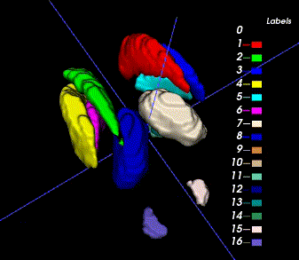
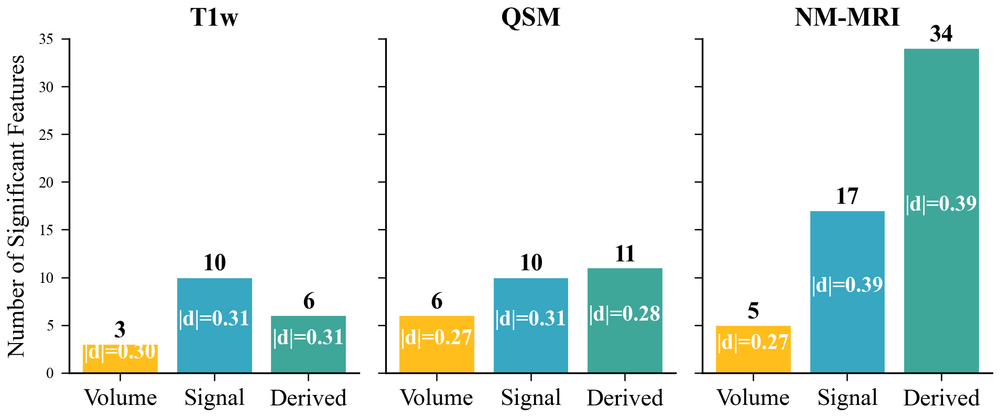
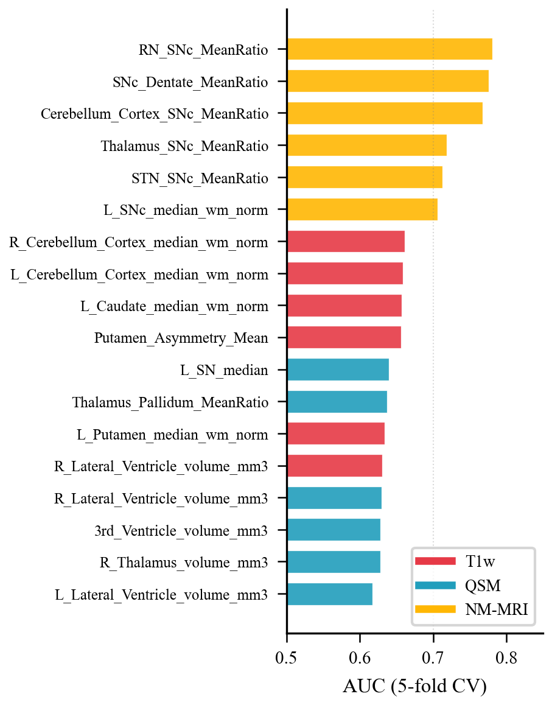
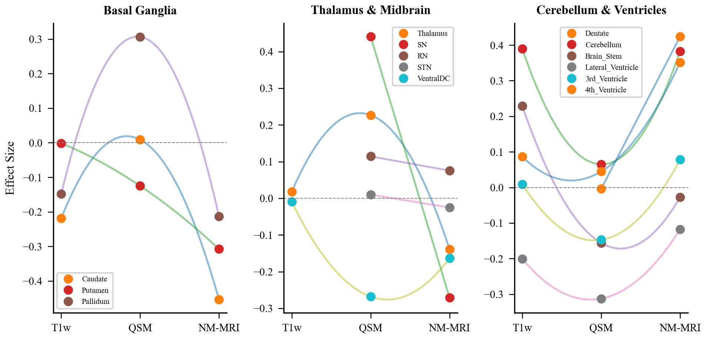
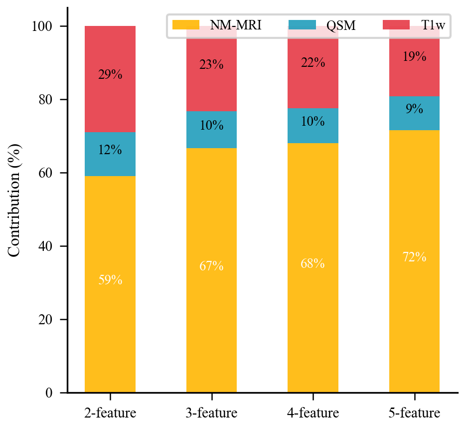
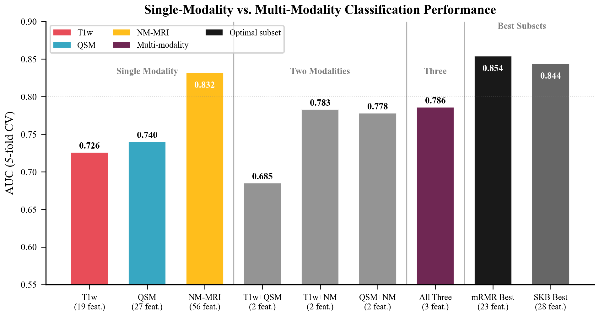

PDCAD dataset description
The Ruijin-PD dataset is a curated multi-parametric MRI dataset for Parkinson's disease (PD) research, with expert annotations of Parkinson's disease-related deep gray matter (DGM) nuclei. It contains 500 subjects (250 PD, 250 healthy controls) and three co-registered MRI sequences: T1-weighted imaging (T1w), quantitative susceptibility mapping (QSM), and neuromelanin-sensitive MRI (NM-MRI).
The QSM reference masks contain 16 labels for eight bilateral structures: caudate nucleus (CN), putamen (Put), globus pallidus (GP), thalamus, subthalamic nucleus (STN), substantia nigra (SN), red nucleus (RN) and dentate nucleus (DN). The NM-MRI reference masks contain the substantia nigra (SN/SNc). PD/healthy-control labels are provided for the training and validation splits.
All subjects were scanned on a 3T Siemens MAGNETOM Skyra with a standardized protocol. Mean age was 62.1 ± 10.1 years in the PD group and 62.8 ± 6.6 years in the healthy-control group; 58% of PD participants and 36% of controls were male. The three sequences share a similar whole-brain field of view covering the cerebrum, brainstem and cerebellum. Facial regions were removed for de-identification.
| Sequence | Acquisition | Resolution | Reconstruction / notes |
|---|---|---|---|
| T1w | 3D MPRAGE; TR/TE/TI = 2300/2.98/900 ms; flip angle 9° | 1.0 mm isotropic | Anatomical reference; co-registered with QSM and NM-MRI. |
| QSM | 3D multi-echo GRE; TR = 35 ms; 4 TEs = 7.2/14.4/21.6/28.8 ms | 0.8 mm isotropic | MEDI reconstruction with automatic CSF zero-referencing. |
| NM-MRI | 2D TSE with magnetization transfer contrast; TR/TE = 600/10 ms | 0.4 × 0.4 mm² in-plane; 2.0 mm slice thickness | Approximately 12 slices cover the midbrain; the full acquisition covers cerebrum, brainstem and cerebellum. |
Deep brain nuclei. One neuroradiologist manually segmented the CN, GP, Put, SN, RN and DN in both hemispheres. A second radiologist with five years of neuroimaging experience double-checked all structural boundaries. ROIs approved by both radiologists served as the ground truth for segmentation.
SN, SNc and STN. The ROIs for the NM-rich region (SNpc, SN) were manually traced by a single rater on MTC magnitude images and QSM maps using SPIN software (SpinTech, Inc., Bingham Farms, MI). NM-based SN boundaries were traced from the last caudal slice for three to five slices until the NM-rich region was no longer visible. Iron-based SN boundaries were traced from one slice below the most cranial slice where the STN was visible, for four to six consecutive slices. STN ROIs were traced from the top of the RN for two slices cranially. A dynamic programming approach (DPA) determined the final boundaries to reduce subjective bias; all boundaries were then reviewed by a second rater and modified in consensus with the first rater.
| QSM labels | Nucleus | NM labels | Nucleus |
|---|---|---|---|
| 1, 2 | Caudate nucleus (CN) | 1, 2 | Substantia nigra (SN/SNc) |
| 3, 4 | Putamen (Put) | — | — |
| 5, 6 | Globus pallidus (GP) | — | — |
| 7, 8 | Thalamus | — | — |
| 9, 10 | Subthalamic nucleus (STN) | — | — |
| 11, 12 | Substantia nigra (SN) | — | — |
| 13, 14 | Red nucleus (RN) | — | — |
| 15, 16 | Dentate nucleus (DN) | — | — |
Average QSM-mask volumes across the training and validation sets (300 cases) are: CN 3.10, Put 3.60, GP 1.98, thalamus 4.61, STN 0.09, SN 0.47, RN 0.17 and DN 0.66 cm³ (bilateral mean).

| Split | Subjects | PD / HC | Images and masks | Labels |
|---|---|---|---|---|
| Training | 200 | 100 / 100 | Released at challenge start | Public |
| Validation | 100 | 50 / 50 | Images released 1 May 2025; masks and labels released 2 August 2025 | Public after release |
| Test | 200 | 100 / 100 | Images released 12 August 2025 | Withheld |
Participants therefore had 300 labelled subjects (200 training + 100 validation) for the final test submission. The 200 test subjects remained unlabelled. The split is fixed and was designed to provide adequate training data while keeping a meaningful held-out test set.
Images and masks are stored as NIfTI files (.nii.gz). The release is organised by
split and case, for example:
data20250615/
train/
RJPD_XXX/
T1.nii.gz
QSM.nii.gz
NM.nii.gz
... # masks / labels for labelled cases
val/
RJPD_XXX/
T1.nii.gz
QSM.nii.gz
NM.nii.gz
test/
RJPD_XXX/
T1.nii.gz
QSM.nii.gz
NM.nii.gz
Download:
The organisers released RRMediCa as a PD classification baseline (63% validation accuracy, 62% test accuracy), together with a baseline implementation for both tracks, a Docker creation guide and prediction requirements. The evaluation metric implementation is public.
The challenge summary paper reports an exhaustive statistical and information-theoretic analysis of the 500-subject cohort. The main findings are summarised here; the figures are reproduced from that analysis.





If you use this dataset, please cite the challenge description and the challenge summary paper.
Challenge description: Wang F, Xiao B, Liu M, Jin Z, Liu Y, Li Y, Zhang Y, Wang X, He N, Yan F. Foundation-Model-Driven Parkinson's Disease Auto Diagnosis Challenge (PDCADxFoundation). Zenodo, 2025. DOI: 10.5281/zenodo.15094607.
Challenge summary paper: Wang F, Xiao B, Liu M, et al. Harnessing Foundation Models for Parkinson's Disease Diagnosis from Multimodal MRI: The PDCADxFoundation Challenge and Comprehensive Dataset Analysis. Medical Image Analysis (under review), manuscript MEDIA-D-26-04385, 2026.
@misc{pdcadxfoundation2025,
title = {Foundation-Model-Driven Parkinson's Disease Auto Diagnosis Challenge (PDCADxFoundation)},
author = {Wang, Fakai and Xiao, Bin and Liu, Mianxin and Jin, Zhijia and Liu, Yu
and Li, Yan and Zhang, Youmin and Wang, Xiaosong and He, Naying and Yan, Fuhua},
year = {2025},
doi = {10.5281/zenodo.15094607},
note = {MICCAI 2025 Challenge}
}